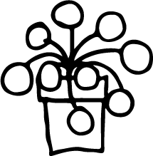
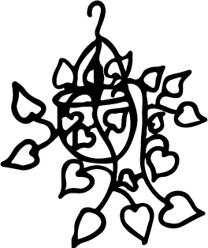
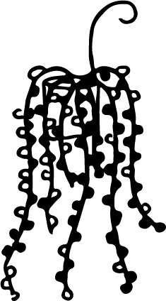

Makkelijke planten
Op zoek naar planten die weinig verzorging nodig hebben? Je bent op de juiste plek! We hebben een aantal leuke, makkelijke planten voor je uitgezocht die ook super eenvoudig in onderhoud zijn. Of je nu weinig tijd hebt of geen groene vingers, deze planten zorgen voor een groen, gezellig gevoel in huis zonder veel gedoe. Ontdek onze favorieten!

Pilea peperomioides
(pannenkoekenplant)
1x per week water geven en de grond licht laten opdrogen.
Het liefst wilt deze plant halfschaduw of indirect licht, niet direct voor het raam.

Epipremnum aureum
(Goudrank)
1x per week water geven zodra de bovenstelaag droog aanvoelt.
Het liefst staat deze plant in halfschaduw tot schaduw.

Ceropegia woodii
(Chinees lantaarnplantje)
Deze plant is super voor degene wie watergeven soms vergeet, hij hoeft namelijk maar 1x per 2 weken water!
Helder, indirect licht of dicht bij het raam, hier wordt deze plant erg blij van.
Meer weten?
Wil je meer leren over de verzorging van deze planten? Haal het beste uit je planten doormiddel van onze tips!
Lees meer